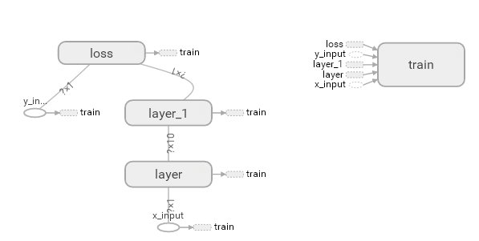
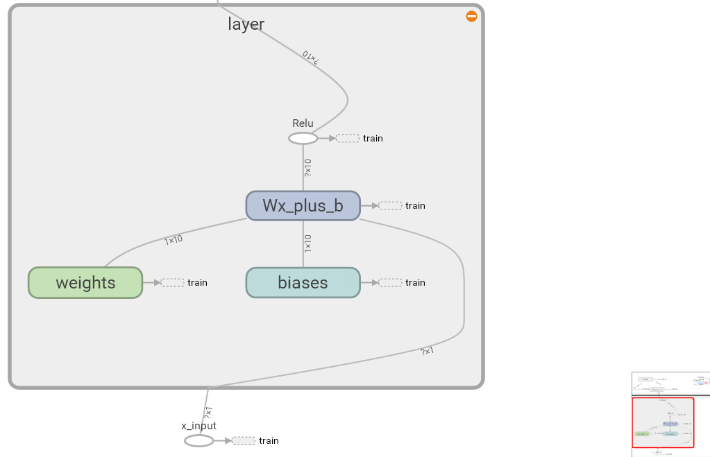
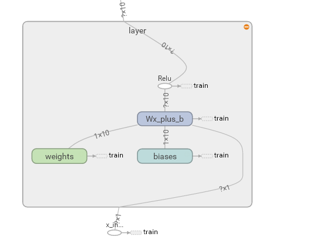

Tensorboard 可视化好帮手 1
作者: 灰猫 编辑: 莫烦 2016-11-03
学习资料:
注意: 本节内容会用到浏览器, 而且与 tensorboard 兼容的浏览器是 “Google Chrome”. 使用其他的浏览器不保证所有内容都能正常显示.
学会用 Tensorflow 自带的 tensorboard 去可视化我们所建造出来的神经网络是一个很好的学习理解方式. 用最直观的流程图告诉你你的神经网络是长怎样,有助于你发现编程中间的问题和疑问.
效果
好，我们开始吧。
这次我们会介绍如何可视化神经网络。因为很多时候我们都是做好了一个神经网络，但是没有一个图像可以展示给大家看。这一节会介绍一个TensorFlow的可视化工具 — tensorboard :) 通过使用这个工具我们可以很直观的看到整个神经网络的结构、框架。 以前几节的代码为例：相关代码 通过tensorflow的工具大致可以看到，今天要显示的神经网络差不多是这样子的

同时我们也可以展开看每个layer中的一些具体的结构：

好，通过阅读代码和之前的图片我们大概知道了此处是有一个输入层（inputs），一个隐含层（layer），还有一个输出层（output） 现在可以看看如何进行可视化.
搭建图纸
首先从 Input 开始：
# define placeholder for inputs to network
xs = tf.placeholder(tf.float32, [None, 1])
ys = tf.placeholder(tf.float32, [None, 1])
对于input我们进行如下修改：
首先，可以为xs指定名称为x_in:
xs= tf.placeholder(tf.float32, [None, 1],name='x_in')
然后再次对ys指定名称y_in:
ys= tf.placeholder(tf.loat32, [None, 1],name='y_in')
这里指定的名称将来会在可视化的图层inputs中显示出来
使用with tf.name_scope('inputs')可以将xs和ys包含进来，形成一个大的图层，图层的名字就是with tf.name_scope()方法里的参数。
with tf.name_scope('inputs'):
# define placeholder for inputs to network
xs = tf.placeholder(tf.float32, [None, 1])
ys = tf.placeholder(tf.float32, [None, 1])
接下来开始编辑layer ， 请看编辑前的程序片段 ：
def add_layer(inputs, in_size, out_size, activation_function=None):
# add one more layer and return the output of this layer
Weights = tf.Variable(tf.random_normal([in_size, out_size]))
biases = tf.Variable(tf.zeros([1, out_size]) + 0.1)
Wx_plus_b = tf.add(tf.matmul(inputs, Weights), biases)
if activation_function is None:
outputs = Wx_plus_b
else:
outputs = activation_function(Wx_plus_b, )
return outputs
这里的名字应该叫layer, 下面是编辑后的:
def add_layer(inputs, in_size, out_size, activation_function=None):
# add one more layer and return the output of this layer
with tf.name_scope('layer'):
Weights= tf.Variable(tf.random_normal([in_size, out_size]))
# and so on...
在定义完大的框架layer之后，同时也需要定义每一个’框架‘里面的小部件：(Weights biases 和 activation function):
现在现对 Weights 定义：
定义的方法同上，可以使用tf.name.scope()方法，同时也可以在Weights中指定名称W。
即为：
def add_layer(inputs, in_size, out_size, activation_function=None):
#define layer name
with tf.name_scope('layer'):
#define weights name
with tf.name_scope('weights'):
Weights= tf.Variable(tf.random_normal([in_size, out_size]),name='W')
#and so on......
接着继续定义biases ， 定义方式同上。
def add_layer(inputs, in_size, out_size, activation_function=None):
#define layer name
with tf.name_scope('layer'):
#define weights name
with tf.name_scope('weights')
Weights= tf.Variable(tf.random_normal([in_size, out_size]),name='W')
# define biase
with tf.name_scope('Wx_plus_b'):
Wx_plus_b = tf.add(tf.matmul(inputs, Weights), biases)
# and so on....
activation_function 的话，可以暂时忽略。因为当你自己选择用 tensorflow 中的激励函数（activation function）的时候，tensorflow会默认添加名称。
最终，layer形式如下：
def add_layer(inputs, in_size, out_size, activation_function=None):
# add one more layer and return the output of this layer
with tf.name_scope('layer'):
with tf.name_scope('weights'):
Weights = tf.Variable(
tf.random_normal([in_size, out_size]),
name='W')
with tf.name_scope('biases'):
biases = tf.Variable(
tf.zeros([1, out_size]) + 0.1,
name='b')
with tf.name_scope('Wx_plus_b'):
Wx_plus_b = tf.add(
tf.matmul(inputs, Weights),
biases)
if activation_function is None:
outputs = Wx_plus_b
else:
outputs = activation_function(Wx_plus_b, )
return outputs
效果如下：（有没有看见刚才定义layer里面的“内部构件”呢？）

最后编辑loss部分：将with tf.name_scope()添加在loss上方，并为它起名为loss
# the error between prediciton and real data
with tf.name_scope('loss'):
loss = tf.reduce_mean(
tf.reduce_sum(
tf.square(ys - prediction),
eduction_indices=[1]
))
这句话就是“绘制” loss了， 如下：
使用with tf.name_scope()再次对train_step部分进行编辑,如下：
with tf.name_scope('train'):
train_step = tf.train.GradientDescentOptimizer(0.1).minimize(loss)
我们需要使用 tf.summary.FileWriter() (tf.train.SummaryWriter() 这种方式已经在 tf >= 0.12 版本中摒弃) 将上面‘绘画’出的图保存到一个目录中，以方便后期在浏览器中可以浏览。
这个方法中的第二个参数需要使用sess.graph ， 因此我们需要把这句话放在获取session的后面。
这里的graph是将前面定义的框架信息收集起来，然后放在logs/目录下面。
sess = tf.Session() # get session
# tf.train.SummaryWriter soon be deprecated, use following
writer = tf.summary.FileWriter("logs/", sess.graph)
最后在你的terminal（终端）中 ，使用以下命令
tensorboard --logdir logs
同时将终端中输出的网址复制到浏览器中，便可以看到之前定义的视图框架了。
tensorboard 还有很多其他的参数，希望大家可以多多了解,
可以使用 tensorboard --help 查看tensorboard的详细参数
最终的全部代码在这里
可能会遇到的问题
(1) 而且与 tensorboard 兼容的浏览器是 “Google Chrome”. 使用其他的浏览器不保证所有内容都能正常显示.
(2) 同时注意, 如果使用 http://0.0.0.0:6006 网址打不开的朋友们,
请使用 http://localhost:6006, 大多数朋友都是这个问题.
(3) 请确保你的 tensorboard 指令是在你的 logs 文件根目录执行的. 如果在其他目录下, 比如 Desktop 等, 可能不会成功看到图.
比如在下面这个目录, 你要 cd 到 project 这个地方执行 /project > tensorboard --logdir logs
- project
- logs
model.py
env.py
(4) 讨论区的朋友使用 anaconda 下的 python3.5 的虚拟环境, 如果你输入 tensorboard 的指令, 出现报错:
"tensorboard" is not recognized as an internal or external command...
解决方法的关键就是需要激活TensorFlow. 管理员模式打开 Anaconda Prompt, 输入 activate tensorflow, 接着按照上面的流程执行 tensorboard 指令.
如果你觉得这篇文章或视频对你的学习很有帮助, 请你也分享它, 让它能再次帮助到更多的需要学习的人. 莫烦没有正式的经济来源, 如果你也想支持 莫烦Python 并看到更好的教学内容, 赞助他一点点, 作为鼓励他继续开源的动力.